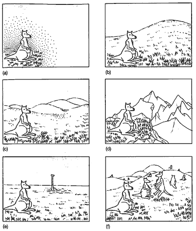

|
Υπάρχουν πολλές τεχνικές που χρησιμοποιούνται στην τεχνητή
νοημοσύνη. Εγώ εξετάζω κυρίως αυτές που αφορούν την εύρεση
της βέλτιστης λύσης σε διάφορα προβλήματα. Στην αναζήτηση
αυτή ψάχνεις μέσα σε ένα χώρο λύσεων π.χ. [Δευτέρα ... Κυριακή,
7:00 - 19:00] για την βελτιστη λύση του προβλήματος που
στη συγκεκριμένη περίπτωση είναι το "πότε θα πάω στο
ΕΜΠ?". Αν φανταστεί κανείς μία συνάρτηση (merit function)
που υπολογίζει την ευχαρίστηση του να πάω στο ΕΜΠ συναρτήσει
της μέρας και της ώρας μπορεί να χρησιμοποιήσει τεχνικές
hill-climbing για να βρεί την βέλτιστη ώρα και μέρα. Αυτή
μπορεί να είναι μια απόφαση που παίρνουμε καθημερινά εμείς
οι άνθρωποι, όμως μόνο και η λέξη "απόφαση" είναι
ικανή να φέρει αλεργία σε κάθε PC. Γενικά τα μηχανήματα
δεν αρέσκονται στο να παίρνουν αποφάσεις, πόσο μάλλον και
σε τέτοιες ασαφείς περιστάσεις.
Μία
παραστατική μεταφορά για την αναζήτηση τύπου hill-climbing
είναι αυτή ενός καγκουρό στην ομίχλη. Υποθέστε ότι είστε ένα
καγκουρό και βρεθήκατε σε ένα άγνωστο βουνό που είναι τυλιγμένο
με πυκνό καπνό και θέλετε να βρείτε την ψηλότερη κορυφή (εικόνα
a). Το μόνο που μπορείτε να κάνετε λόγω της περιορισμένης
ορατότητάς σας, είναι να δείτε το ψηλότερο σημείο τριγύρω
στην περιοχή σας και να πηδήξετε σε αυτό. Από τη νέα σας θέση
τώρα επαναλαμβάνετε την προηγούμενη διαδικασία μέχρι να φτάσετε
σε ένα σημείο που δεν υπάρχει τριγύρω ψηλότερο. Φυσικά, τίποτα
δεν εγγυάται ότι φτάσατε στο ψηλότερο σημείο της περιοχής
χρησιμοποιώντας αυτή τη μέθοδο. Το αν θα φτάσετε ή όχι εξαρτάται
αποκλειστικά από την μορφή του βουνού που θα βρεθείτε. Αν
το έδαφος είναι ομαλό, υπάρχει μόνο ένα μέγιστο και η κλίση
σε κάθε σημείο του εδάφους δείχνει προς αυτό το μέγιστο θα
βρείτε την ψηλότερη κορυφή (εικόνα b).
Ίσως πράγματι να είναι έτσι, παρ'όλα αυτά αν το έδαφος
έχει μικρούς λοφίσκους θα βρείτε μια κορυφή αλλά το πιθανότερο
είναι να μην είναι η ψηλότερη. (εικόνα c). Αναλόγως με το
τι ζητάμε, αυτό μπορεί να μην είναι πρόβλημα αφού και πάλι
έχουμε φτάσει σε ένα βέλτιστο, έστω και τοπικό. Από την
άλλη αν το έδαφος είναι γεμάτο με πέτρες και απότομες κορυφές
το πιθανότερο είναι ότι θα κολλήσετε σε ένα τοπικό μέγιστο
το οποίο θα απέχει πάρα πολύ από το ολικό το οποίο επιθυμούμε
(εικόνα d).
Η χειρότερη όμως περίπτωση είναι όταν το έδαφος δεν έχει
καθόλου κλίση. Σε αυτή τη περίπτωση υπάρχουν μεμονωμένες
κορυφές και πηδώντας τυχαία προς κάθε κατεύθυνση είναι σχεδόν
απίθανο να βρεθείς εκεί από τύχη (εικόνα e). Μία άλλη λύση
στους αλγόριθμους ανεύρεσης είναι αυτή που φαίνεται στην
εικόνα f. Αυτή είναι μία μορφή παράλληλης αναζήτησης (γενετικοί
αλγόριθμοι) όπου πολλά καγκουρό εξερευνούν τον χώρο και
η πιθανότητα να φτάσουν στο υψηλότερο σημείο του χώρου αναζήτησης
είναι πολύ μεγαλύτερη.
Από τα παραπάνω παραδείγματα γίνεται φανερό ότι είναι πολύ
σημαντικό να ξέρεις το πόσο σύνθετος είναι ο χώρος αναζήτησης
πριν αρχίσεις να σχεδιάζεις έναν αλγόριθμο τεχνητής νοημοσύνης.
Παρ'όλα αυτά είναι φανερό ότι οι δυνατότητες περιορίζονται
από τον ίδιο τον χώρο αναζήτησης. Για παράδειγμα στην κρυπτογραφία,
ο σκοπός είναι να βρεθεί ένας τρόπος ώστε το μήνυμα να κωδικοποιείται
σε ένα χώρο τόσο σύνθετο ώστε να μην μπορεί κανείς να το
αποκωδικοποιήσει χωρίς πλήρη γνώση του χώρου ούτε εμπειρικά,
πόσο μάλλον με κάποιο αλγόριθμο αναγνώρισης προτύπων.
Από το βιβλίο data minning
του Pieter Adriaans
|